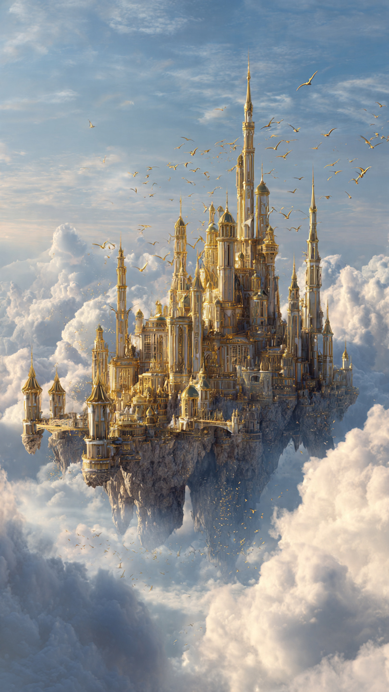
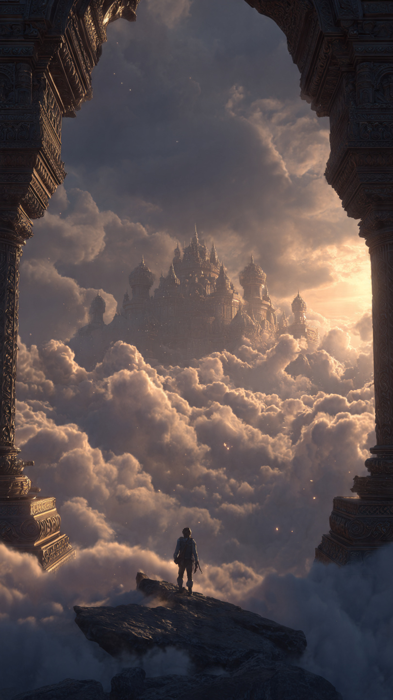

منذ أكثر من ألف عام، تناقل الناس أسطورة لم يجرؤ أحد على تكذيبها.
كانوا يقولون إن هناك قلعةً عظيمة لا تقف فوق جبل، ولا وسط بحر، بل تطفو فوق السحاب نفسه.
لا تظهر كل يوم.
ولا كل عام.
بل تظهر مرة واحدة فقط كل مائة عام، مع أول شروق شمس في اليوم الذي يكتمل فيه القمر الذهبي.
ومن ينجح في الوصول إليها...
سيعرف السر الذي أخفته السماء منذ بداية الزمن.
كان معظم الناس يظنون أنها مجرد حكاية يرويها الأجداد للأطفال.
لكن في قرية صغيرة عند سفح الجبال، كان يعيش شاب يُدعى ريان.
ورث عن جده صندوقًا خشبيًا قديمًا، وأوصاه ألا يفتحه إلا عندما يرى "السماء تلمس الأرض".
لم يفهم ريان الوصية.
واحتفظ بالصندوق لسنوات دون أن يفتحه.
وفي صباح غريب، استيقظ أهل القرية على مشهد لم يره أحد من قبل.
اختفت الغيوم من السماء كلها، ثم بدأت تتجمع فوق قمة أعلى جبل.
وببطء...
ظهرت أبراج حجرية ضخمة تخرج من بين السحاب.
ثم ظهرت أسوار، وجسور، وأعلام ذهبية ترفرف في الهواء.
لقد ظهرت القلعة الأسطورية.
تذكر ريان وصية جده.
أسرع إلى الصندوق وفتحه لأول مرة.
في داخله وجد مفتاحًا مصنوعًا من الكريستال الأزرق، وخريطة قديمة مرسوم عليها طريق يصعد إلى الغيوم.
وكانت هناك رسالة قصيرة كتبها جده:
"إذا ظهرت القلعة... فأنت المختار."
لم يتردد ريان.
حمل المفتاح والخريطة، وبدأ صعود الجبل.
كلما ارتفع، أصبحت الرياح أقوى.
وكانت الغيوم تتحرك وكأنها تفتح له الطريق.
وبعد ساعات طويلة...
وصل إلى حافة صخرية مرتفعة.
وفجأة ظهر أمامه جسر شفاف مصنوع من الضوء.
كان يمتد بين الجبل والقلعة العائمة.
خطا ريان أول خطوة على الجسر.
فلم يسقط.
بل شعر وكأنه يمشي فوق زجاج صلب.
وحين وصل إلى البوابة الرئيسية، وجدها مغلقة بقفل بلوري ضخم.
وما إن وضع المفتاح داخله...
حتى انفتحت الأبواب ببطء.
لكن قبل أن يدخل...
سمع زئيرًا هائلًا يهز السماء.
رفع رأسه...
فرأى مخلوقًا عملاقًا بأجنحة فضية يدور فوق القلعة.
ثم هبط أمامه.
وقال بصوت عميق:
"من يدخل القلعة... لا يعود الشخص نفسه أبدًا."
📷 الصورة رقم 1

توقف ريان أمام المخلوق العملاق، لكنه لم يهرب.
كانت له أجنحة فضية واسعة، وريش يلمع كأنه مصنوع من ضوء القمر.
ورغم حجمه الهائل، لم يكن يبدو شريرًا.
بل كانت عيناه تحملان حكمةً قديمة.
قال بصوت هادئ:
"أنا أزور...
آخر حراس القلعة العائمة."
فتح أزور جناحيه، ودعا ريان للدخول.
ما إن عبر البوابة حتى شعر وكأنه دخل عالمًا آخر.
كانت القاعات واسعة، وأرضيتها من البلور الشفاف.
تجري تحتها أنهار من الضوء الأزرق.
أما النوافذ، فكانت تطل على الغيوم من كل اتجاه، وكأن القلعة تسبح فوق بحر أبيض لا نهاية له.
قاد أزور ريان إلى قاعة مستديرة تتوسطها كرة بلورية ضخمة.
كانت تدور ببطء، وداخلها تظهر صور لمدن وجبال وبحار من أنحاء العالم.
لكن بعض الصور كانت تتحول فجأة إلى عواصف وحرائق وظلام.
سأل ريان بدهشة:
"ما هذه؟"
أجاب أزور:
"هذه مرآة المصير."
"إنها ترى المستقبل..."
"وتُظهر ما قد يحدث إذا اختل توازن العالم."
ثم اقترب من الكرة البلورية، ووضع يده عليها.
فتحولت الصور إلى مشهد مخيف.
سماء سوداء.
وقلاع مدمرة.
وتنانين تهرب من النيران.
ثم ظهر ظل ضخم يغطي العالم كله.
قال أزور بصوت منخفض:
"لقد بدأ يستيقظ."
ارتبك ريان وسأل:
"من؟"
أجاب الحارس:
"ملك العواصف."
"قبل ألف عام، سُجن داخل حجر السماء."
"لكن السحر الذي يقيده يضعف كل قرن."
ثم سار أزور نحو صندوق ذهبي قديم.
فتحه ببطء.
وفي داخله كان يوجد سيف بلوري يلمع بألوان السماء.
قال:
"هذا هو سيف السحاب."
"ولا يستطيع حمله إلا وريث الحراس."
ما إن أمسك ريان بالسيف...
حتى أضاءت جدران القلعة كلها.
واهتزت الأبراج بعنف.
ودوى صوت انفجار هائل في الخارج.
ركض الاثنان إلى الشرفة.
فرأيا الغيوم تنقسم إلى نصفين.
ومن بينها خرج تنين أسود عملاق، تحيط به دوامات من البرق الأسود.
وخلفه جيش من المخلوقات الطائرة المظلمة.
ابتسم التنين ابتسامة مرعبة وقال:
"أخيرًا... فُتح باب القلعة من جديد."
📷 الصورة رقم 2

اهتزت القلعة العائمة بقوة حتى بدأت بعض الحجارة تتساقط من أبراجها.
كانت الغيوم تدور حولها كإعصار هائل، والبرق يضيء السماء بلا توقف.
وقف ريان على أعلى برج وهو يمسك بسيف السحاب بكلتا يديه.
أما التنين الأسود، فكان يقترب ببطء، وخلفه آلاف المخلوقات المظلمة التي غطت السماء.
بدت المعركة وكأنها ستكون نهاية كل شيء.
قال أزور وهو ينظر إلى الأفق:
"اسمع جيدًا يا ريان..."
"القوة وحدها لن تهزم ملك العواصف."
"إنه يتغذى على الخوف والغضب."
"وكلما استسلم الناس لهما... أصبح أقوى."
ثم وضع يده على كتف ريان وأضاف:
"السيف لا يعمل إلا إذا كان قلب حامله نقيًا."
أطلق التنين الأسود زئيرًا هائلًا، ثم اندفع نحو القلعة بسرعة البرق.
رفع ريان سيف السحاب.
فخرج منه شعاع أزرق شق الغيوم إلى نصفين.
اصطدم الشعاع بالنيران السوداء، واهتزت السماء من شدة الاصطدام.
بدأت التنانين الحارسة للقلعة تظهر من بين السحب، وانضمت إلى القتال.
امتلأ الفضاء بمعركة لم يشهدها العالم منذ ألف عام.
وخلال القتال، لاحظ ريان شيئًا غريبًا.
في صدر التنين الأسود كانت توجد بلورة زرقاء محاطة بسلاسل من الظلام.
تذكر كلمات أزور.
فهم أن الشر ليس جزءًا من التنين نفسه...
بل شيئًا يقيده.
قرر ألا يوجه ضربته إلى قلبه.
بل إلى السلاسل.
قفز ريان من أعلى البرج، وساعدته أجنحة أزور على الطيران للحظات.
وعندما اقترب من التنين، رفع السيف بكل قوته.
لكن بدلًا من مهاجمة المخلوق...
ضرب السلاسل السوداء التي كانت تطوق البلورة.
تحطمت السلاسل في لحظة.
وانفجر نور أزرق غطى السماء كلها.
اختفت العواصف.
وسقطت سحب الظلام كأنها غبار يتلاشى مع الريح.
تحول التنين الأسود إلى تنين أبيض ضخم، له أجنحة فضية وعينان بلون السماء.
خفض رأسه أمام ريان وقال:
"لقد حررتني."
"كنت حارس القلعة الأول..."
"لكن الظلام سجَن روحي لقرون."
ثم ارتفع في السماء مع بقية التنانين، وعاد السلام إلى المملكة.
ابتسم أزور وقال:
"الآن انتهت مهمتي."
ثم تحولت أجنحته إلى آلاف الريشات المضيئة التي تلاشت في الهواء.
أما القلعة، فبدأت ترتفع ببطء أعلى فأعلى، حتى اختفت بين السحب.
لكن قبل أن تختفي تمامًا، عاد المفتاح البلوري إلى يد ريان.
وتوهج للحظة، ثم أصبح حجرًا عاديًا.
وعندما عاد إلى قريته، لم يصدق أحد ما رواه.
لكن في كل مائة عام...
كان سكان القرية يرون قلعة تلمع فوق الغيوم مع شروق الشمس.
وكان الأطفال يسمعون دائمًا قصة الشاب الذي أنقذ القلعة العائمة...
وأعاد نور السماء إلى العالم.